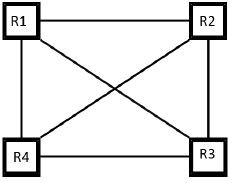

Multi-Robot Formation Control
Implemented decentralized formation control for multi-robot systems using graph theory and consensus algorithms, enabling localized coordination without a central leader.
Control Architecture
Controller Design (MBSE)

Model-Based Systems Engineering Approach
Communication Topology
Graph-based Neighbor Interaction
System Specifications
Agent Model
Unicycle Mobile Robots
Swarm Size
4 Agents (Scalable)
Algorithm
Consensus Protocol
Platform
MATLAB / Simulink
Key Features
Decentralized
No central leader. Each robot decides its acton based only on local neighbor information.
Scalable
Graph-based approach allows easy extension to N robots without changing the control law.
Robust
Formation persists even if some communication individual links fail, as long as the graph remains connected.
Full Documentation
For detailed theoretical background, mathematical proofs of stability, and implementation details, please refer to the full project report.
Read Project Report